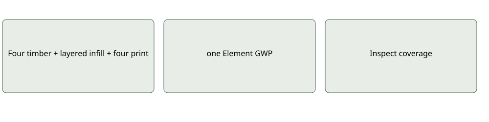
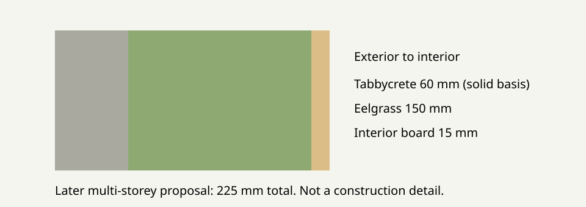

Development documentation · November 2026
Tabbycrete, eelgrass and timber wall

Connect
Four timber + layered infill + four print borders → one Element GWP
Author and interpret
Nine elements and ten material parts. Eelgrass 4.42 m² × .10 = .442 m³ / 44.2 kg. Tabbycrete .1768 m³ infill + .0632 border = .24 m³ / 360 kg. Timber .237 m³ / 106.65 kg. Five nulls: four timber factors and one unavailable eelgrass-containing wall. Four perimeter outputs sum to 16.4241. Infill Tabbycrete retains 45.9459, giving 62.37 known Tabbycrete contribution overall. Do not add those subtotals twice. Complete wall GWP remains unavailable.
Coverage check
Inspect Result for units, supplier coverage, factor context and missing contributions. Available numerical impacts are not proof of scientific completeness.
Component contracts · Example status


